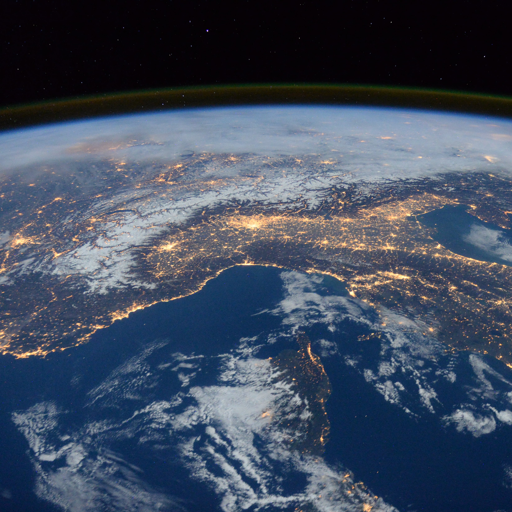

"So, what do you do?" is a question I dread at every family gathering, every new group of people I meet and even with people I know well. I know there is no reason to feel this way. I understand my science and I know my project better than anyone else, so why do I find it so difficult to explain in an accessible way? A training course focused on innovation and comercialisation run by Dr. Kevin Parker addressed just this point. The two day course took us through lots of useful exercises introducing some simple techniques to better communicate our science, whether to an end user, another scientist or the general public. One of these tasks was to work on a 3-minute thesis type problem, and this is what I came up with.
Clouds are essential for life on Earth, playing an integral role in the water cycle and interacting with radiation. For every meter cubed of cloud there are hundreds of cloud droplets and each of these cloud droplets contain millions of individual water molecules. But who knew that behind each and every one of these cloud droplets there is a dirty little secret?!
Water molecules collide and join together to form cloud droplets, but they also break apart due to bond breaking heat energy. It is only when the air cools past the dew point temperature do molecules slow down enough for clusters to grow. The larger a cluster grows the less likely a water molecule will break away due to a greater curvature and the greater intermolecular forces. This effect is described by Kohler theory. Until a cluster reaches a critical size, the chances of it growing are less than the chances of the cluster shrinking. That critical size is around 150 million water molecules.
It is extremly unlikely that clusters of purely water molecules will grow to a critical size without their dirty little secret. But what is this dirty little secret I hear you ask? Their dirty little secret are aerosol particles that can be found everywhere in our atmosphere. Aerosols can range from sea salt to desert dust particles through to soot, pollen and bacteria. If water condenses to the surface of these particles clusters can start at their critical size, and then grow, and grow and grow, until they form cloud droplets.
My PhD focuses the composition of these aerosol particles. By modelling how aerosol particles interact with water in the atmosphere I hope to better understand the effects that these particles have on the formation of clouds.
I would really like to thank Kevin for a great training course, and for opening my eyes to the skills necerssary to make the most of opportunities that studying towards a PhD in environmental science can bring.